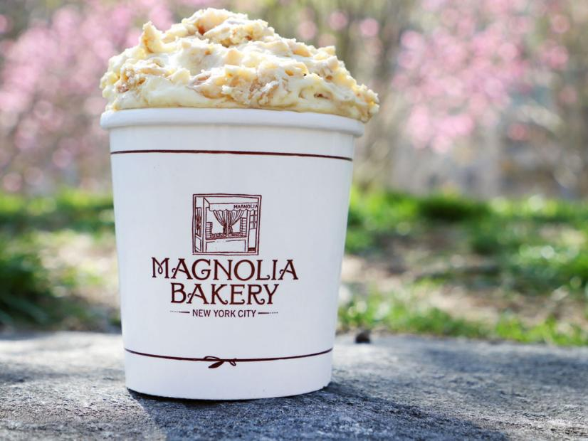

Magnolia's Famous Banana Pudding Recipe
Submitted by: Stephanie

Description
After stumbling into Magnolia Bakery on a whim one day, a friend who
was visiting and I decided to try the banana pudding. Oh my. It is
safe to say that we were quickly obsessed and got it three more times
that week. After my friend went back home, we realized that we needed
to find a copycat version of the recipe. It's that good.
Lo and behold, here it is. It is cheap, easy, and just as good as the real
version. We can't make it often in our house because we eat it way too fast.
Ingredients
- One 14-ounce can sweetened condensed milk
- 1 1/2 cups (360 grams/12.7 ounces) ice-cold water
- One 3.4-ounce package instant vanilla pudding mix
- 3 cups (720 grams/25.5 ounces) heavy cream
- one 11-ounce box Nilla wafers
- 4 to 5 ripe bananas, sliced
Instructions
- Using a stand mixer with the whisk attachment, beat the
condensed milk and water on medium speed until well combined (about 1 minute)
- Add the pudding mix to the mixture and beat until there are no lumps and the
mixture is smooth (about 2 minutes)
- Transfer the mixture to a medium bowl, cover and refrigerate until firm
- Whip the heavy cream in the stand mixer on medium speed until it starts to thicken
(about 1 minute) and then increase the speed to medium-high and whip until stiff peaks
form. Be careful not to overwhip!
- With the mixer running on low speed, add the pudding mixture in, one spoonful at a time
and mix until well blended and no streaks of pudding remain
- Starting with a trifle dish, spread some of the pudding over the bottom and layer cookies,
followed by banana slices, over top. Repeat until all the ingredients are gone
- Cover tightly with plastic wrap and refrigerate for 4 to 6 hours. Cookies should be tender
when poked with a fork. This dessert is best served within 12 hours of assembling